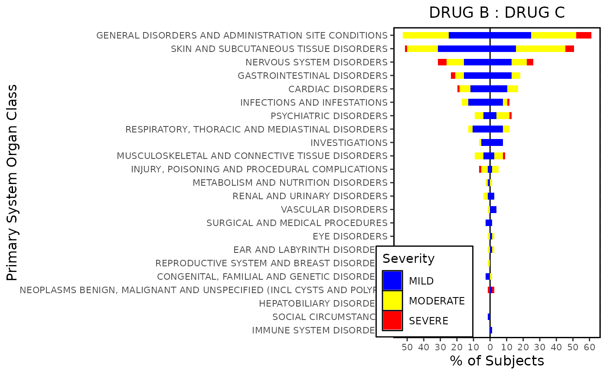

Tornado Plot
Usage
tornado_plot(
datain,
trt_left_label,
trt_right_label,
bar_width = 0.5,
axis_opts = plot_axis_opts(xaxis_label = "Primary System Organ Class", yaxis_label =
"% of Subjects", ylinearopts = list(breaks = seq(-100, 100, 10), labels =
(c(seq(100, 0, -10), seq(10, 100, 10))))),
legend_opts = list(label = "Severity", pos = c(0.15, 0.15), dir = "vertical"),
series_opts,
griddisplay = "N"
)Arguments
- datain
An input dataframe retrieved from
process_tornado_data()`.- trt_left_label
A Treatment label for displaying left hand side plot.
- trt_right_label
A Treatment label for displaying right hand side plot.
- bar_width
Width of individual bars numeric
- axis_opts
A
listof axis specific options retrieved fromplot_axis_opts().- legend_opts
Legend styling option, a
listcontaininglabel,pos(position) anddir(direction).- series_opts
Series Variable styling options, a
listcontainingcolorandcontrast.- griddisplay
Display Grid
(Y/N).
Examples
data("adsl")
data("adae")
tornado_df <- process_tornado_data(
dataset_adsl = adsl,
dataset_analysis = adae,
adsl_subset = "SAFFL == 'Y'",
analysis_subset = "TRTEMFL == 'Y'",
obs_residual = "30",
fmq_data = NA,
ae_catvar = "AESEV/AESEVN",
trtvar = "ARM",
trt_left = "Xanomeline High Dose",
trt_right = "Xanomeline Low Dose",
pctdisp = "TRT",
denom_subset = NA_character_,
legendbign = "N",
yvar = "AESOC"
)
#> mcatstat success
series_opts <- g_seriescol(tornado_df, "blue~yellow~red", "BYVAR1")
tornado_plot(
tornado_df,
trt_left_label = "DRUG B",
trt_right_label = "DRUG C",
bar_width = 0.5,
axis_opts = plot_axis_opts(
xaxis_label = "Primary System Organ Class",
yaxis_label = "% of Subjects",
ylinearopts = list(
breaks = seq(-100, 100, 10),
labels = c(seq(100, 0, -10), seq(10, 100, 10))
)
),
legend_opts = list(
label = "Severity",
pos = c(0.15, 0.15),
dir = "vertical"
),
series_opts = series_opts,
griddisplay = "N"
)
#> Warning: Removed 106 rows containing missing values or values outside the scale range
#> (`geom_col()`).
#> Warning: Removed 106 rows containing missing values or values outside the scale range
#> (`geom_col()`).
